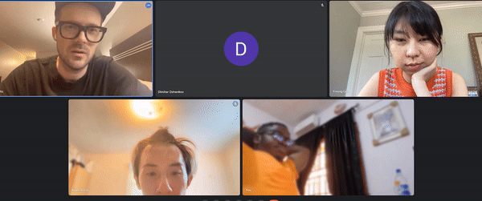
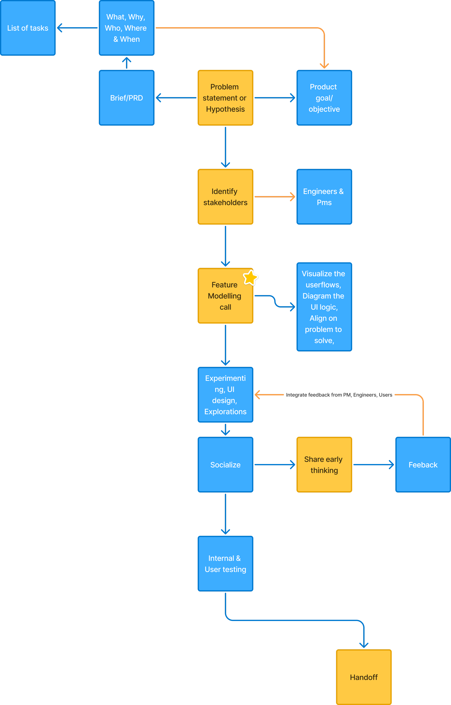
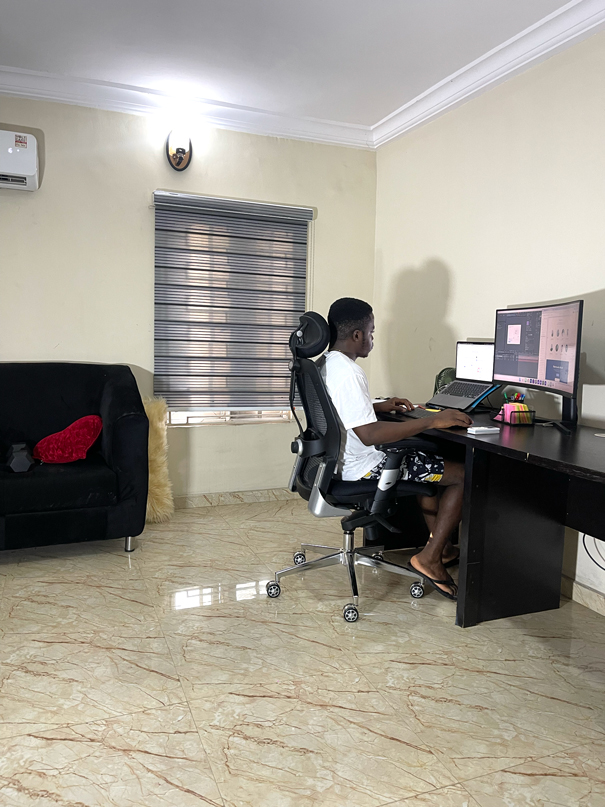

You're welcome to my little corner of the Internet, my friend.
Here reads: what I’m currently up to, my design process, & career so far
I transitioned into Product design through the Udacity Nanodegree during the COVID-19 era.
Prior to UX, I did Graphic design, motion and video editing for corporate companies & small startups for ~8 years.
I worked briefly as the founding Product designer at Partcloud.co, a now defunct software agency. It was a client-facing role where I worked for early-stage founders on their MVPs, alongside 3 PMs.

Working here is a major career highlight
My breakthrough came in 2021 when I got hired by the Head of Design at Transcend.io, who was at the time, the sole designer. Transcend, a Data & AI Governance startup was in their growth & expansion phase. Making a strong impression early, I progressed from taking Figma tasks off of my Manager to working on products end-to-end while collaborating with the highly technical Engineers, C-suite execs

The Gang. The fantastic 6
Mid 2024, I joined an elite group of Consultants at OKFN.org, EU to lead the pivot and new stakeholders' vision on the Open data editor, a data exploration & management app.
I spent the most of last year understanding Product design from a PM’s point of view. This informed a PLG-conscious design approach, refined how I problem-solve, the questions I ask, and an hindsight-sense of how my PM colleagues ran workshops.
Since November, I’ve taken a bunch of JS & CSS courses on LinkedIn learning, and built out this website on the way.
When I'm not finding how to apply these concepts to real world problems, with my hosting on Vercel, I make updates in Cursor, run the terminal to make commits, and push --all to GitHub.
I see these as the pillars (mental models, skills, and processes) a Designer can only get better at.

My design process

Where’s my next home? You decide → Send an email